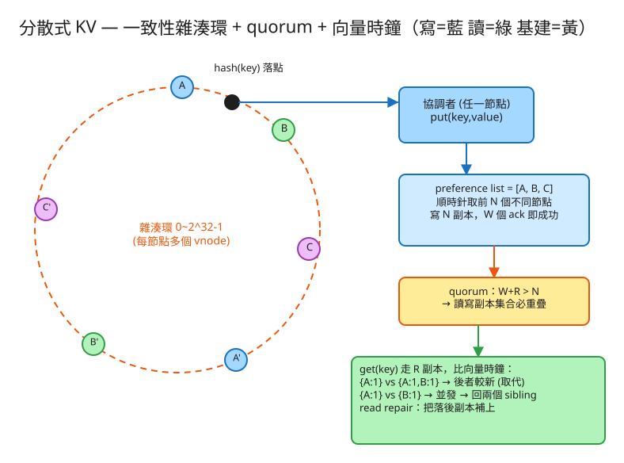

K 分散式系統 建議 55 分鐘 Design a Distributed Key-Value Store
get/put API，而是三件事如何咬合：
一致性雜湊（資料放哪、加機器怎麼搬）、quorum N/R/W（容錯與一致性旋鈕）、
向量時鐘（並發寫怎麼調和而不丟資料）。
put(key, value) / get(key)：簡單的鍵值介面（value 是不透明的 blob）。| 指標 | 假設 | 推算 |
|---|---|---|
| 資料量 | 10 億 key × 每筆 1 KB | 原始 ~1 TB；N=3 副本 → ~3 TB |
| 吞吐 | 50 萬 ops/s（讀寫各半） | 分散到 100 節點 → 每節點 ~5k ops/s |
| 單節點容量 | 每台 ~1 TB SSD | 3 TB / 1 TB ≈ 至少 3~5 台起；留成長空間取 10+ 台 |
| vnode 數 | 每實體節點 100~256 個 vnode | 環上點夠密 → 負載偏差 < 幾個 % |
| 副本與 quorum | N=3, R=2, W=2 | W+R>N 成立；可容忍 1 節點故障仍讀寫 |
# 寫入（協調者可為任一節點）
PUT /kv/{key}
Body: { "value": "...", "context": "<上次讀到的向量時鐘>" }
→ 200 { "version": { "A": 2, "B": 1 } } # 回傳新的向量時鐘
# 讀取
GET /kv/{key}
→ 200 { "values": [ { "value": "...", "version": {"A":2} } ], # 正常：單一版本
"context": "..." }
→ 200 { "values": [ {"value":"red","version":{"A":1}}, # 衝突：多個 sibling
{"value":"blue","version":{"B":1}} ] } # 由應用層合併後再 put 回去
# 刪除（其實是寫一個 tombstone 墓碑標記）
DELETE /kv/{key}
每個 key 對應一個或多個「版本」（並發時會有多個 sibling）：
key → [ { value, vector_clock }, ... ]
vector_clock = { node_id: counter } # 如 {A:2, B:1}
一致性雜湊環（每節點放多個 vnode）：
ring: 環座標(0~2^32-1) → 實體節點
preference list(key) = 從 hash(key) 順時針，前 N 個「不同實體節點」
節點本地儲存（真實系統）：
memtable（記憶體） + SSTable（磁碟，LSM-tree）+ commit log
Merkle tree（每段 key range 一棵）→ 副本間快速比對差異做反熵
✏️ 用 Excalidraw 開啟編輯（diagram.excalidraw） hash(key) 落在環上某點
client ──▶ 任一節點(協調者) ──▶ 一致性雜湊環 ──▶ preference list = [A, B, C]
│ │
├── put：寫 N 個副本，收到 W 個 ack 即回成功 ─────┐
└── get：讀 R 個副本，比向量時鐘調和 + read repair │
▼
A ◀── gossip ──▶ B ◀── gossip ──▶ C (節點互相同步成員/狀態)
每節點: memtable+SSTable, Merkle tree(反熵)hash(key) % N 一旦 N 變動，幾乎所有 key 重映射 → 雪崩、大搬遷。hash("A#0"), hash("A#1")…）均勻散佈，負載偏差大幅下降；移除節點時負擔也較平均地分給其它節點，異質硬體還能按容量配不同數量的 vnode。W + R > N：保證「寫的副本集合」與「讀的副本集合」必定重疊至少一個節點 → 讀一定看得到最新的寫（在向量時鐘調和後）。W=N, R=1 讀快寫慢（讀多寫少場景）；W=1, R=N 寫快讀慢、寫最高可用；W=R=2, N=3 平衡且容忍 1 故障。{node: counter}，協調者寫入時把自己分量 +1。比較兩版本：每分量都 ≤ 且至少一個 < → happens-before（舊，丟掉）；互有大小 → 並發衝突，保留為 sibling 交給應用層合併（如購物車取聯集）。副本長期偏差怎麼補齊？每個 key range 建一棵 Merkle tree（葉子是資料雜湊，往上逐層雜湊）。兩副本只要從根往下比對雜湊，相同的子樹整段跳過，快速定位差異段並同步，省去逐筆掃描。這是背景持續跑的「補洞」機制。
| 瓶頸 | 症狀 | 對策 |
|---|---|---|
| 加節點重平衡 | 搬資料影響線上流量 | 一致性雜湊只搬 ~1/N；vnode 讓搬遷來源分散；限流背景遷移 |
| 熱 key | 某 key 被狂讀寫，單副本組過載 | 應用層加隨機後綴打散；前置快取；該 key 提高 N |
| 分區/故障時的可用性 | 嚴格 quorum 湊不到 W | sloppy quorum + hinted handoff，維持可寫，事後修復 |
| sibling 爆炸 | 長期不合併，版本越堆越多 | 應用層讀到就合併再寫回；向量時鐘加時間戳剪枝（Dynamo 的做法） |
| 墓碑（tombstone）堆積 | 刪除標記拖慢掃描 | 設定 GC grace 後 compaction 清除（注意別讓已刪資料復活） |
本題 demo 在單一 PHP process 內模擬一個多節點叢集，把分散式 KV 真正的考點跑起來：
src/ConsistentHashRing.php 一致性雜湊環 + vnode：hash(key)（crc32）順時針查找、preference list（前 N 個不同實體節點）、加/移除節點只重映射少量 key。src/VectorClock.php 向量時鐘：increment / compare（happens-before vs 並發）/ merge。src/Cluster.php 叢集核心：put（quorum W + hinted handoff）、get（quorum R + 向量時鐘調和 + read repair + sibling）、節點 up/down/add/remove；各節點 KV 存 data/node_*.json，以 flock 原子化。public/index.php 路由 + 測試頁：看環/vnode 分佈、查 preference list、put/get、切換節點 up/down 看 hinted handoff、製造並發寫看向量時鐘 sibling。# 啟動
cd demo
php -S localhost:8031 -t public
# 瀏覽器開 http://localhost:8031
# 試：put 幾筆 → get（走 R quorum）→ 用 down 製造分割做並發寫看 sibling → 加節點 D、down C 看 hinted handoffjson + hash(crc32) 擴充，每檔 declare(strict_types=1);。